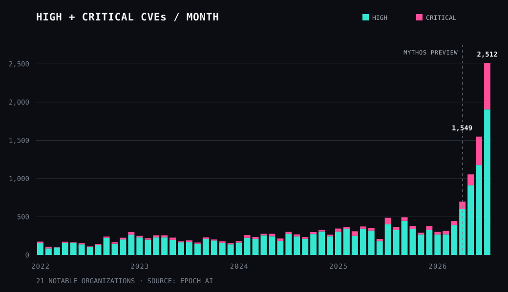

Dall'uscita del primo Mythos, internet si è mossa parecchio per verificare che le affermazioni sulle capacità offensive del modello fossero reali. In quel momento, qualcosa nella cybersecurity è cambiato.
Tutti hanno iniziato ad andare a caccia di bug con l'AI, a de-censurare modelli capaci di hackerare (ma che non lo permettevano per i blocchi messi dai provider), e i recenti dati sui CVE (Common Vulnerabilities and Exposures) dimostrano che la capacità di trovare bug è almeno raddoppiata da quando Mythos è uscito.
{kind=link}

Quindi le affermazioni non erano solo marketing, c'è un impatto reale. Ma non solo. Bisogna essere chiari: il rilascio di Mythos cambierà per sempre l'industria.
Adesso è possibile trovare vulnerabilità con un semplice prompt, quando un tempo servivano mesi e mesi di studio e ricerca da parte di ricercatori specializzati. L'asticella si è abbassata così tanto che praticamente chiunque ora può hackerare servizi, aziende e persone.
Questo è un enorme problema: se la barriera d'ingresso per l'hacking si abbassa così tanto, quanto aumenteranno il cybercrimine e i cosiddetti "cybersecurity incidents"?
La cosa peggiore non riguarda solo i danni economici ad aziende e nazioni, ma anche il fatto che attori politici, dissidenti e giornalisti possono essere bersagliati dalle agenzie di intelligence molto più facilmente.
Il caso italiano riguardante la società israeliana Paragon è l'ultimo caso prima di questa rivoluzione. Prima solamente l'intelligence israeliana e quella di vari altri stati (principalmente Israele, America, Iran, Russia e Corea del Nord) avevano capacità offensive in grado di hackerare individui, ora invece è tana libera tutti. Sono sicuro che sentiremo molte più notizie riguardanti scandali di hacking o simili.
Nel giugno 2025 il Copasir ha confermato che il governo italiano aveva usato Graphite, lo spyware di Paragon, contro gli smartphone degli attivisti Luca Casarini, Giuseppe Caccia e David Yambio. Nel marzo 2026 una consulenza tecnica depositata alle procure di Roma e Napoli ha trovato tracce compatibili con Graphite anche sul telefono del giornalista Francesco Cancellato. L'accesso ai server dell'AISI ha confermato le operazioni contro Casarini e Caccia, ma non quella contro Cancellato. Non sappiamo ancora chi lo abbia spiato.
Quella tra cybercriminali e difensori è una partita a guardie e ladri, ma giocata a velocità diverse: chi attacca è quasi sempre un passo avanti. Per colmare il divario servirà tutta l'AI possibile, sia per ridurre il numero di vulnerabilità introdotte nel software, sia per permettere ai difensori di correggerle in tempi rapidi. Oggi solo aziende come Google e Microsoft, che investono miliardi in sicurezza, ottengono risultati apprezzabili; per tutte le altre le falle continuano a emergere senza sosta, aprendo la strada anche ad attacchi alla supply chain che espongono a cascata ogni utilizzatore finale.
Chiunque può hackerare chiunque. Chiunque abbia un minimo di rilevanza politica dovrà stare costantemente in allerta.
Fonti
Epoch AI, Serious cyber vulnerability disclosures kept climbing in July (31 lug 2026) — https://epoch.ai/data-insights/cve-severity-spike-july-2026 · CSV scaricabile e metodologia, con 21 organizzazioni monitorate
Sky TG24 (5 mar 2026) — https://tg24.sky.it/cronaca/2026/03/05/caso-paragon-news · consulenza tecnica, tre dispositivi
ANSA (5 mar 2026) — https://www.ansa.it/sito/notizie/cronaca/2026/03/05/caso-paragon-latto-di-accusa-dei-pm-spiati-tre-telefoni_cb83ed31-752c-4ad5-b6a0-0a384cbd841e.html · accesso ai server AISI, relazione Copasir
Citizen Lab, Virtue or Vice? A First Look at Paragon's Proliferating Spyware Operations (19 mar 2025) — https://citizenlab.ca/research/a-first-look-at-paragons-proliferating-spyware-operations/ · analisi tecnica delle infezioni italiane